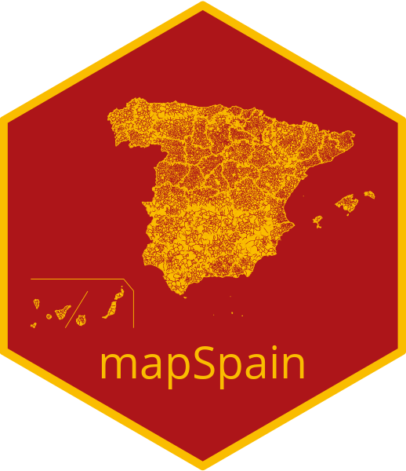

Package index
-
esp_codelist - Database with codes and names of spanish regions
-
esp_get_can_box()esp_get_can_provinces() - Get
sflines and polygons for insetting the Canary Islands -
esp_get_capimun() - Get
sfPOINTof the municipalities of Spain -
esp_get_ccaa()esp_get_ccaa_siane() - Get Autonomous Communities of Spain as
sfPOLYGONorPOINT -
esp_get_comarca() - Get 'comarcas' of Spain as
sfPOLYGON -
esp_get_country() - Get
sfPOLYGONrepresenting Spain -
esp_get_hex_prov()esp_get_hex_ccaa()esp_get_grid_prov()esp_get_grid_ccaa() - Get a
sfhexbin or squaredPOLYGONof Spain -
esp_get_munic()esp_get_munic_siane() - Get municipalities of Spain as
sfPOLYGON -
esp_get_nuts() - Get NUTS of Spain as
sfPOLYGONorPOINT -
esp_get_prov()esp_get_prov_siane() - Get Provinces of Spain as
sfPOLYGONorPOINT -
esp_get_simpl_prov()esp_get_simpl_ccaa() - Get a simplified map of provinces and autonomous communities of Spain
-
gisco_get_nuts() - Get GISCO NUTS
sfpolygons, points and lines (from giscoR)
-
esp_get_hydrobasin() - Get
sfPOLYGONof the drainage basin demarcations of Spain -
esp_get_hypsobath() - Get
sfPOLYGONorLINESTRINGwith hypsometry and bathymetry of Spain -
esp_get_rivers() - Get
sfPOLYGONorLINESTRINGof rivers, channels and other wetlands of Spain
-
esp_get_railway() - Get
sfLINESTRINGorPOINTwith the railways of Spain -
esp_get_roads() - Get
sfLINESTRINGof the roads of Spain
-
addProviderEspTiles()providerEspTileOptions() - Include base tiles of Spanish public administrations on a leaflet map
-
esp_getTiles() - Get static tiles from public administrations of Spain
-
esp_make_provider() - Create a custom tile provider
-
esp_tiles_providers - Database of public WMS and WMTS of Spain
-
coord_sf()geom_sf()geom_sf_label()geom_sf_text()stat_sf() - Visualise sf objects (from ggplot2)
-
geom_spatraster_rgb() - Visualise
SpatRasterobjects as images (from tidyterra)
-
esp_get_grid_BDN()esp_get_grid_BDN_ccaa() - Get
sfPOLYGONwith the national geographic grids from BDN -
esp_get_grid_EEA() - Get
sfPOLYGONof the national geographic grids from EEA -
esp_get_grid_ESDAC() - Get
sfPOLYGONof the national geographic grids from ESDAC -
esp_get_grid_MTN() - Get
sfPOLYGONof the national geographic grids from IGN
-
esp_clear_cache() - Clear your mapSpain cache dir
-
esp_set_cache_dir()esp_detect_cache_dir() - Set your mapSpain cache dir
-
esp_dict_region_code()esp_dict_translate() - Convert and translate subdivision names
-
esp_codelist - Database with codes and names of spanish regions
-
esp_munic.sf sfobject with all the municipalities of Spain (2019)-
esp_nuts.sf sfobject with all the NUTS levels of Spain (2016)-
esp_tiles_providers - Database of public WMS and WMTS of Spain
-
pobmun19 - Database with the population of Spain by municipality (2019)
-
esp_check_access() - Check access to SIANE data
-
esp_move_can() - Displace a
sfobject located in the Canary Islands
-
mapSpainmapSpain-package - mapSpain: Administrative Boundaries of Spain